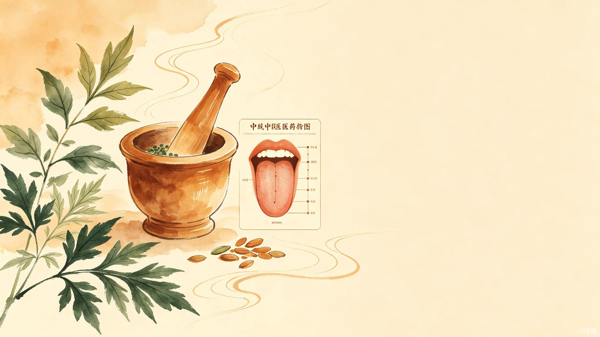

中医养生辅助系统
望诊采集·智能分析·七日调理
让中医养生知识从古籍走向日常生活
岐养七日是一个面向大众的中医养生辅助系统。用户上传舌像、面相、手相图片并选择症状后，系统通过本地规则引擎和可选的 Qwen3-VL 图像分析，生成体质方向判断、当下时辰的子午流注养生建议，以及一份覆盖饮食、运动、作息的七日调理计划。系统支持用户注册登录、历史记录查看和 PDF 报告导出，后端具备完整的 Docker 部署、CI/CD 流水线、Prometheus 监控和 Loki 日志采集。
从望诊采集到七日计划，覆盖完整的中医养生辅助流程
支持舌像、面相、手相图片上传与拖拽，实时预览缩略图，可单张删除，Multer 限制 8MB 并校验 MIME 类型。
本地规则引擎根据症状计算体质方向，可选接入 Qwen3-VL 提取望诊图片特征，双引擎协同输出可解释结果。
基于九大体质分类（平和、气虚、阳虚、阴虚、痰湿、湿热、血瘀、气郁、特禀），给出体质方向与置信度。
结合当前时辰推荐对应经脉的养生建议，展示时间区间、经脉名称和具体行动指南，如子时养胆经。
生成覆盖七天的饮食推荐、运动方案和作息安排，每天包含早中晚三个时段的具体建议。
JWT 注册登录后自动保存诊断记录，支持查看历史体质变化，一键将七日计划导出为 PDF 报告。
前后端分离架构，本地规则引擎与 AI 图像理解协同工作
flowchart TB browser["浏览器
React + Vite"] api["Express API
JWT · Zod · Helmet"] auth["Auth Service
JWT 鉴权"] analysis["Analysis Service
诊断与计划生成"] rules["本地中医规则库
症状→体质→计划"] qwen["Qwen3-VL
OpenAI 兼容接口"] db[("SQLite
用户与诊断记录")] logs["Winston 日志
按天轮转"] metrics["Prometheus
/metrics"] loki["Loki + Promtail
日志采集"] swagger["Swagger UI
/api-docs"] browser -->|HTTP| api api --> auth api --> analysis analysis --> rules analysis -->|图片特征提取| qwen api --> db api --> logs api --> metrics logs --> loki api --> swagger
| 层级 | 技术栈 | 用途 |
|---|---|---|
| 前端 | React · Vite · React Router · react-hot-toast · html2canvas · jsPDF | 页面渲染、路由、通知、截图与 PDF 导出 |
| 后端 | Node.js · Express · SQLite · JWT · Zod · Multer · Helmet · Morgan · Winston | API 服务、数据持久化、鉴权、校验、安全、日志 |
| AI 接入 | OpenAI 兼容接口 · Qwen3-VL | 望诊图片特征提取，辅助体质判断 |
| 测试 | Jest + Supertest · Vitest + Testing Library | 后端接口测试、前端组件测试 |
| 部署 | Docker · Nginx · GitHub Actions · GHCR | 容器化部署、反向代理、CI/CD 自动构建推送 |
| 监控 | Prometheus · Grafana · Loki · Promtail | 指标采集、可视化、日志收集 |
从用户输入到七日计划输出的完整链路
sequenceDiagram
participant U as 用户
participant F as React 前端
participant B as Express 后端
participant Q as Qwen3-VL
participant D as SQLite
U->>F: 选择症状 / 上传图片
F->>B: POST /api/v1/diagnose
B->>B: Zod 校验与 MIME 校验
B->>B: 本地规则引擎初步分析
alt 配置 Qwen3-VL 且有图片
B->>Q: 图像特征提取请求
Q-->>B: 返回 JSON 特征
end
B->>B: 生成体质方向与七日计划
alt 已登录用户
B->>D: 保存诊断记录
end
B-->>F: 返回分析结果
F-->>U: 展示方案 / 可导出 PDF
项目在六个维度的能力评估
后端提供 9 个 RESTful 接口，Swagger UI 可交互测试
| 方法 | 路径 | 说明 | 鉴权 |
|---|---|---|---|
| GET | /health | 健康检查与模型上游探测 | 否 |
| GET | /metrics | Prometheus 兼容运行指标 | 否 |
| GET | /api/v1/symptoms | 获取症状列表 | 否 |
| POST | /api/v1/auth/register | 用户注册 | 否 |
| POST | /api/v1/auth/login | 用户登录 | 否 |
| GET | /api/v1/auth/me | 获取当前用户信息 | 是 |
| POST | /api/v1/diagnose | 生成七日调理方案 | 可选 |
| GET | /api/v1/history | 查看历史记录列表 | 是 |
| GET | /api/v1/history/:id | 查看历史诊断详情 | 是 |
全程借助 TRAE IDE 的 AI 辅助能力完成从需求到部署
与 AI 助手对话，从模糊的"中医养生系统"想法逐步收敛到"望诊采集 + 体质分析 + 七日计划"的具体功能边界。AI 帮助梳理了用户角色（游客、注册用户、管理人员）和 10 项功能需求的优先级。
AI 帮助拆分前后端模块结构，生成系统设计文档和接口定义。包括 controller/service/model 三层架构、数据库表结构设计、安全设计方案和运维监控方案。
通过对话式编程完成控制器、服务层、数据模型、前端组件的编写。AI 负责模板代码和样板逻辑，开发者专注中医规则引擎的业务规则和用户体验细节。
AI 协助配置 Docker 容器化（非 root 用户、HEALTHCHECK）、GitHub Actions CI/CD 流水线、Swagger API 文档、Prometheus 指标采集和 Loki 日志收集方案。
AI 生成 Jest + Supertest 后端接口测试用例和 Vitest + Testing Library 前端组件测试。同时生成需求分析、系统设计、数据库设计、测试报告和用户手册五份文档。